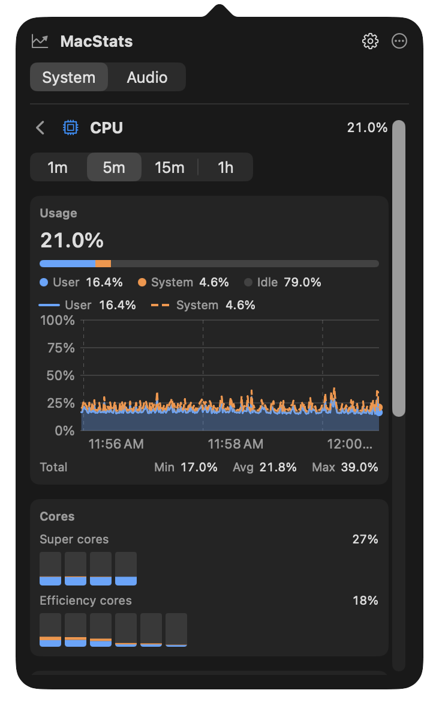
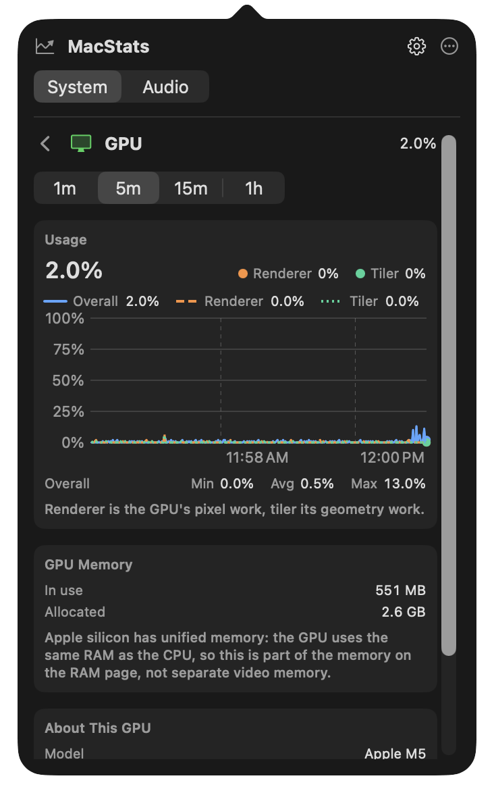
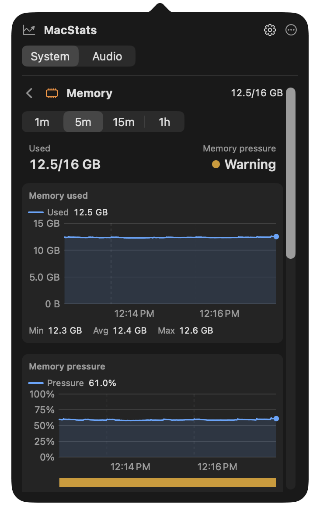
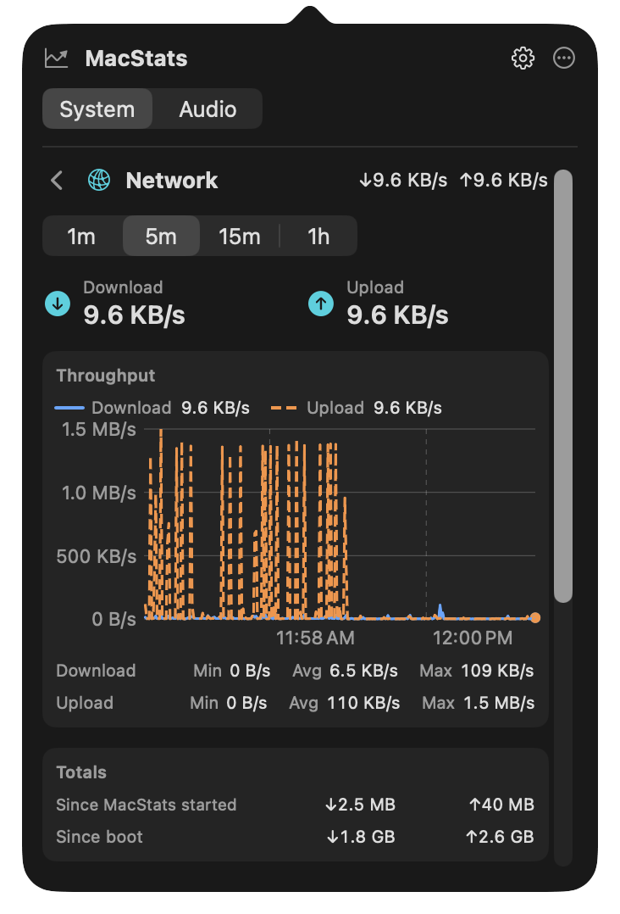
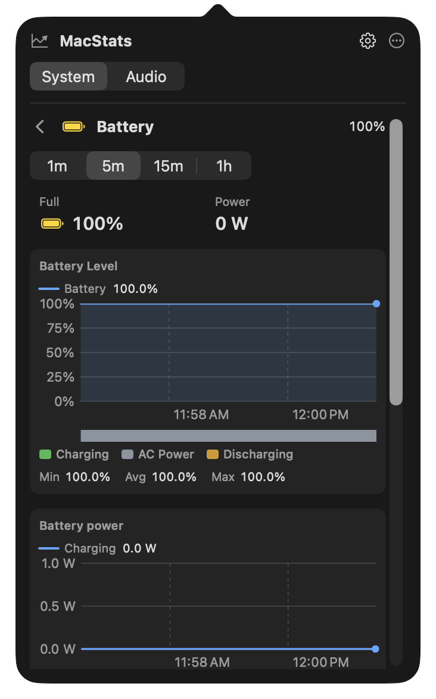
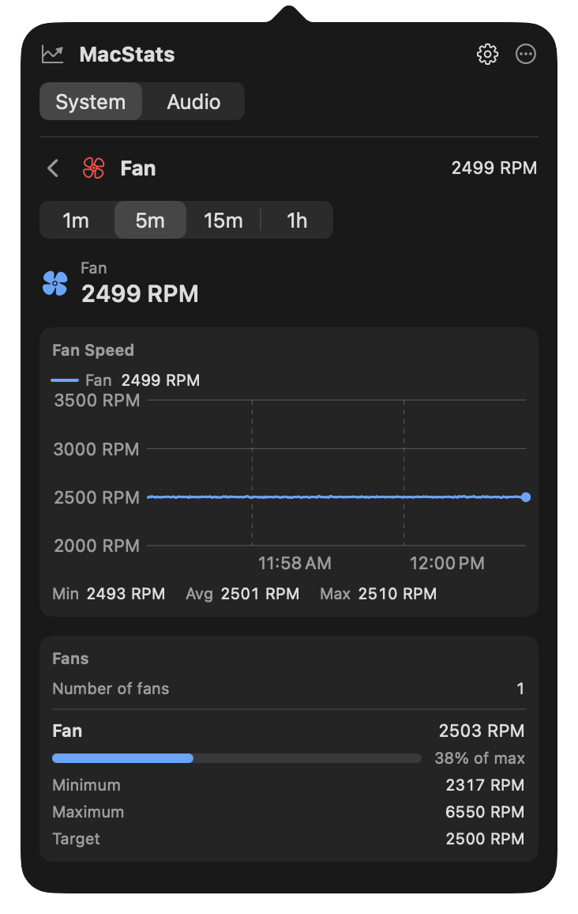
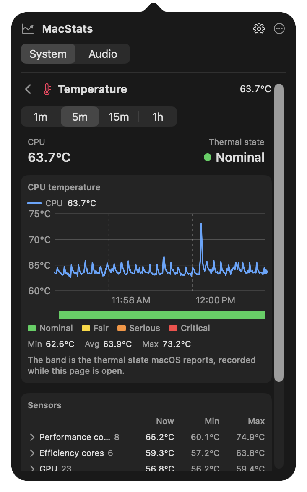

User guide / v0.1.0
Small app.
Everything explained.
Welcome
Everything you need to get MacStats running and make it your own.
MacStats is a native macOS menu bar app that monitors your Mac. The v0.1.0 public preview supports macOS 13 (Ventura) and later. The release is packaged as Universal 2 for Apple silicon and Intel; sensor availability varies by hardware.
Download & install
- Download MacStats-0.1.0-universal.dmg and its SHA-256 checksum from the v0.1.0 release.
- Optionally verify the downloaded file using the command below.
- Open the DMG and drag MacStats.app into Applications.
- Open MacStats. This preview is ad-hoc signed and not notarized. If macOS blocks it, Control-click the app and choose Open, or use System Settings → Privacy & Security → Open Anyway.
- Find MacStats in your menu bar. It does not appear in the Dock.
cd ~/Downloads
shasum -a 256 -c MacStats-0.1.0-universal.dmg.sha256Keep the DMG and checksum file in the same folder. A successful check reports OK. If verification fails, download both files again before opening the app.
Understand the metrics
| Metric | What it tells you |
|---|---|
| CPU | Processor utilization as a percentage. |
| Memory | Used and total RAM; the compact menu bar value shows used memory. |
| GPU | Graphics utilization when the hardware exposes it. |
| Battery | Charge level on Macs with a supported battery. |
| Disk | Startup disk capacity: percent used and free space, in decimal GB as Finder reports it (for example, “97% used · 15 GB free”). The menu bar shows percent used, such as DSK 97%. Coming in v0.2.0; v0.1.0 shows read and write throughput instead. |
| Network | Received and transmitted traffic rates. |
| Fan | Fan speed in RPM, where available. This is a reading, not a control. |
| Temperature | Available temperature readings in °C. |
Unavailable readings are shown as unavailable. Sensors differ across Mac models and macOS releases; a missing value does not necessarily mean the app is malfunctioning.

Details & history
Every card in the System tab opens a detail page in the same popover: live charts, a breakdown of the number on the card, and the context behind it, such as which processes are busiest. The cards stay the at-a-glance view; a page answers “why is this number what it is?”
Open and close a page
- Click a card, or focus it with the keyboard and press Return or Space. The popover grows to fit the page, up to about 560 points tall, and then scrolls.
- Go back with the chevron next to the page title,
Esc, or⌘[. Closing the popover returns it to the cards, so the next open starts there. - From the menu: right-click (or Control-click) MacStats in the menu bar, or select ⋯ in the popover, then choose Details and a metric. The popover opens straight on that page.
- One click, one page: when the menu bar shows exactly one metric, turn on Settings → Details → Open details when clicking a single menu bar metric and a click on it opens that metric’s page instead of the cards. It is off by default.
Charts
Pick a range of 1m, 5m (the default), 15m, or 1h with the selector under the page title. Hover over a chart to read the exact value and time under the pointer; below each chart, Min, Avg, and Max summarize the visible range. Where MacStats was not sampling, the chart shows a gap rather than an invented line. With VoiceOver, every value is labelled and each chart offers an audio graph.
History is recorded whenever MacStats samples: always while a metric is shown in the menu bar, otherwise while the popover is open. A few series are recorded only while their page is open (disk activity, battery power, the GPU renderer and tiler split, the memory pressure, power source and thermal state bands, a second fan, and the sensor minimums and maximums), and the page says so. Values your Mac does not expose are hidden or marked “Not available on this Mac”, never shown as zero.
CPU
Total usage in large type with its user, system, and idle split, and a stacked chart of user and system time. Cores shows a bar per core, grouped by core type with each group’s average. Load Average gives the 1, 5, and 15-minute load next to the number of cores. Top Processes lists the five processes using the most CPU, refreshed every 2 seconds, and About This CPU shows the chip, its core counts, uptime, and the thermal state.
GPU
Overall utilization and its history, plus the renderer (pixel work) and tiler (geometry work) split when the graphics driver reports it. GPU Memory shows memory in use and allocated; on Apple silicon this is part of the unified RAM, not separate video memory. About This GPU shows the model, GPU cores, and Metal device; a Mac with several GPUs lists each one. Per-app GPU usage is not shown: macOS has no public API for it.


Memory
Used memory and the memory pressure level macOS reports (Normal, Warning, or Critical), then charts of memory used and memory pressure. The pressure line is wired plus compressed memory as a share of RAM, with a band of the reported level underneath. Breakdown splits RAM into app memory, wired, compressed, cached files, and free, as Activity Monitor does. Swap & paging shows swap used and the rates of page-ins, page-outs, swap-ins, swap-outs, compressions, and decompressions. Top processes lists the five largest memory footprints, with each app’s helpers counted in, and About shows physical memory and page size.
Disk
Startup Disk shows percent used and free space, with a bar of used, purgeable, and available space and the volume’s name, file system, and FileVault status. All Volumes lists every mounted volume with its kind (internal, external, removable, or network) and free space. Disk Activity charts read and write throughput, with the data read and written since startup. Processes by Disk I/O lists the processes reading and writing the most, and About shows the drive’s model, type, connection, and firmware.

Network
Live download and upload rates, a throughput chart, and Totals since MacStats started and since boot. Interfaces lists each connected interface (Wi-Fi, Ethernet, or other) with its current rates, totals, IPv4 and IPv6 addresses, and link speed, and marks the primary one. Wi-Fi shows signal, noise, transmit rate, and channel. Your public IP address and per-app traffic are not shown by design.
Battery
Charge and state, time until full or remaining, and battery power in watts. Battery Level charts the charge with a band showing when the Mac was charging, on AC power, or discharging, and Battery power charts the watts going into or out of the battery. Power adapter shows whether an adapter is connected and its wattage, Battery health shows the cycle count, condition, maximum and design capacity, and health, and Modes shows Low Power Mode. A Mac without a battery shows its power source only.


Fan
The current speed of each fan and its RPM history, then Fans: for every fan, its minimum, maximum, and target speed and a gauge of its current speed as a share of the maximum. A fanless Mac says so. These are readings only; MacStats never sets fan speeds.
Temperature
The CPU temperature from the card and the thermal state macOS reports, a temperature chart with a band of thermal states underneath, and Sensors: every SMC temperature sensor mapped for your Mac’s chip, grouped into performance cores, efficiency cores, GPU, SoC and other, battery, and storage. Each group shows its hottest sensor now and the lowest and highest readings since MacStats started; click a group to list its sensors. Temperatures are in degrees Celsius.


Privacy
History is kept in memory only, for the last hour. Nothing is written to disk, and quitting MacStats clears it. The pages make no network requests. Per-process GPU and network usage are not shown because macOS has no public API for them, and your public IP address is not shown because looking it up would mean contacting an outside server. The Wi-Fi network name needs Location access, which MacStats never requests, so it normally does not appear. Process lists include only the processes MacStats is allowed to inspect.
Audio controls
The popover has two tabs: System for metrics and Audio for optional sound controls. Nothing changes until you use a control.
Devices
Choose the default output and input device, and set the output device’s volume or mute it. These controls work on macOS 13 and later. Some devices do not expose volume or mute; MacStats then disables those controls.
App Mixer
Adjust the volume of, or mute, individual apps that are playing audio. The App Mixer requires macOS 14.2 or later and is off until you select Enable App Mixer. macOS then asks for system audio-capture permission. Mixing stays active only while enabled; select Disable App Mixer to stop.
Audio is processed live on your Mac. MacStats never records, stores, or sends it. See Privacy & security.
Make it yours
Display options
Open the popover, then select the gear icon. Toggle the individual CPU, GPU, memory, battery, disk, network, fan, and temperature cards. All eight cards are enabled by default.
Menu bar
Select the metrics to display directly in the menu bar. These choices are independent of the popover cards. CPU is selected by default. Two or three values are usually enough to avoid crowding; selecting none restores the app icon.

Refresh rate
Choose 1, 2, 5, or 30 seconds. The default is 1 second. Sampling continues while any menu bar metric is enabled. With all menu bar metrics disabled, sampling runs only while the popover is open.
Launch at login
Enable Launch at Login under Startup. This requires running the packaged .app; the option is unavailable when running the bare executable. MacStats reports registration errors in Settings and reflects the actual system state.

Troubleshooting
I cannot find an app window
MacStats lives in the menu bar. Click its icon or selected metric text to open the popover. There is no Dock icon.
Temperature, GPU, or fan readings are unavailable
These values depend on hardware and macOS exposing the relevant sensors. Some Macs have no fan. MacStats does not substitute invented readings for unsupported data.
The menu bar is getting crowded
Open Settings and deselect some Menu Bar metrics. You can still keep those cards visible inside the popover.
How can I reduce background sampling?
Choose a longer refresh interval. To pause sampling whenever the popover is closed, deselect every Menu Bar metric.
The App Mixer is unavailable or lists no apps
The App Mixer requires macOS 14.2 or later and is not part of v0.1.0. Make sure MacStats is allowed in System Settings → Privacy & Security → Screen & System Audio Recording. Only apps that are currently playing audio appear in the mixer.
Can I control my fans?
No. MacStats never writes fan or SMC settings; fan speed is a reading only.
Launch at Login is disabled or fails
Run MacStats from its .app bundle in Applications. Read the status and any error shown under Startup in Settings; registration must succeed before the setting takes effect.
Privacy & security
The app reads local system metrics. It has no accounts, no telemetry, and no network data upload. Preferences are saved locally using macOS UserDefaults.
Audio capture
Coming in v0.2.0: the optional App Mixer needs system audio-capture permission so it can adjust each app’s volume. Audio is processed live on your Mac, only while the mixer is enabled, and is never recorded, stored, or sent. You can revoke the permission at any time in System Settings → Privacy & Security → Screen & System Audio Recording. Choosing a device or changing the output volume does not require this permission.
The preview uses an ad-hoc signature, which is not notarization. Download from the project's GitHub release and verify its checksum. Report security issues privately using the security policy.
Build & contribute
Use Xcode 15.1 or later, which provides the macOS 14.2 SDK needed to build the audio mixer (Xcode 15.1 itself requires macOS 13.5 or later). The built app still runs on macOS 13 and later.
git clone https://github.com/eyupucmaz/MacStats.git
cd MacStats
swift build
swift test
bash Scripts/check-monitoring-only.shPackage a release locally
APP_VERSION=0.1.0 BUILD_NUMBER=1 RELEASE_STRICT=1 bash Scripts/build-app.sh
bash Scripts/package-dmg.sh 0.1.0
bash Scripts/verify-release.sh 0.1.0 1The packaging script produces the universal DMG and checksum in dist/. Read the contributing guide, code of conduct, and future fan control exploration before proposing changes.
This website is static HTML and CSS in docs/, published with GitHub Pages. No build dependencies are needed.